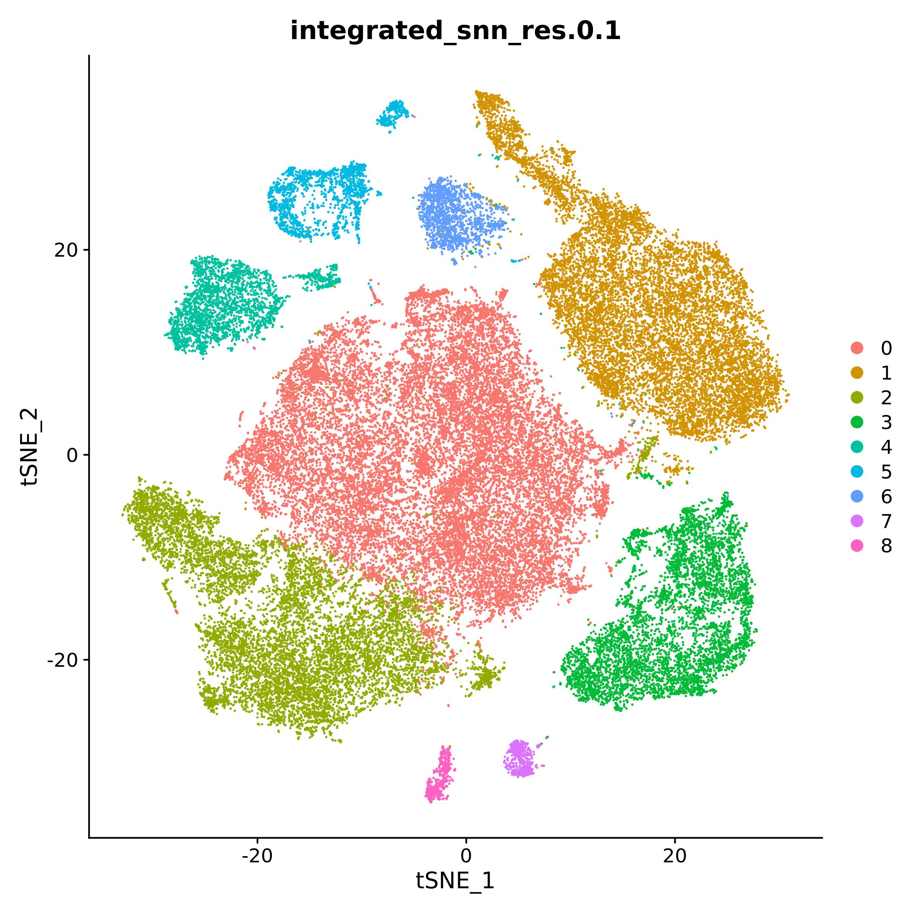
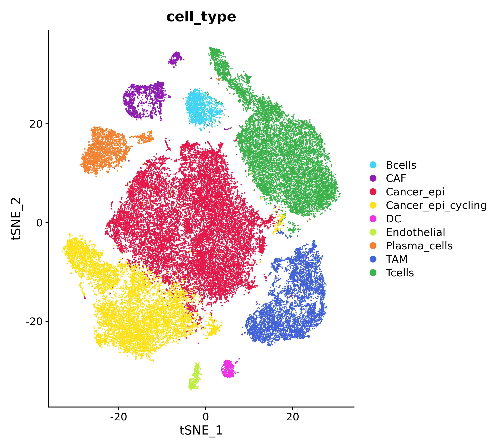
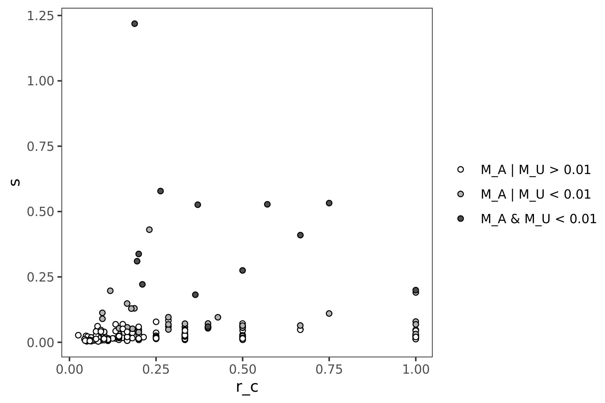
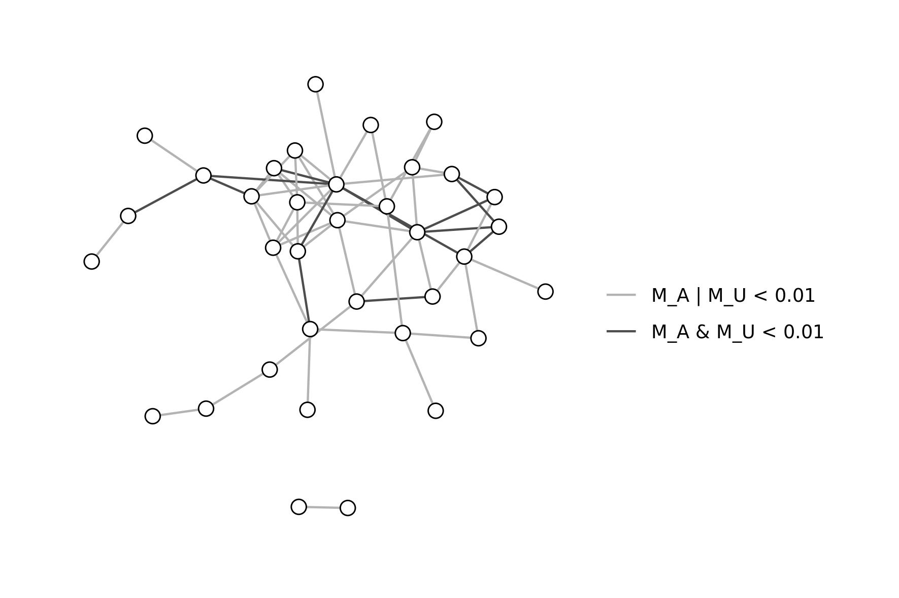
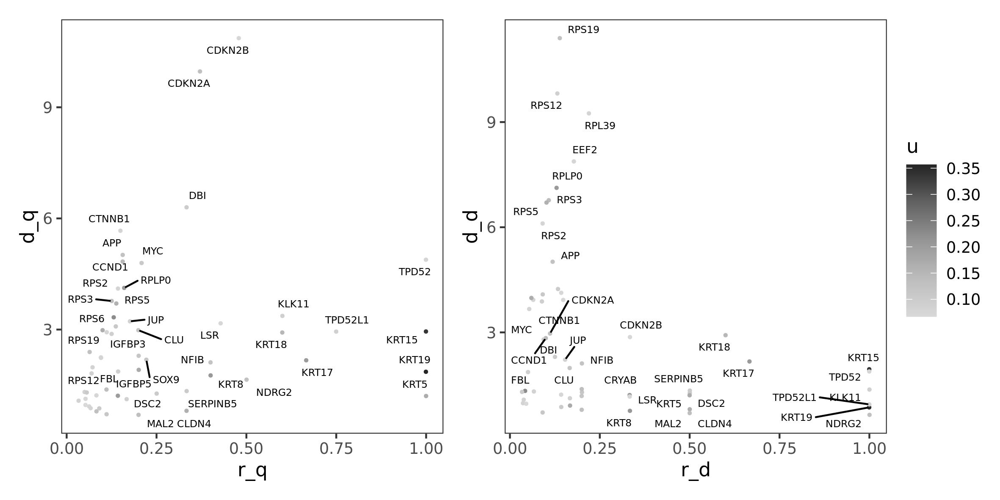
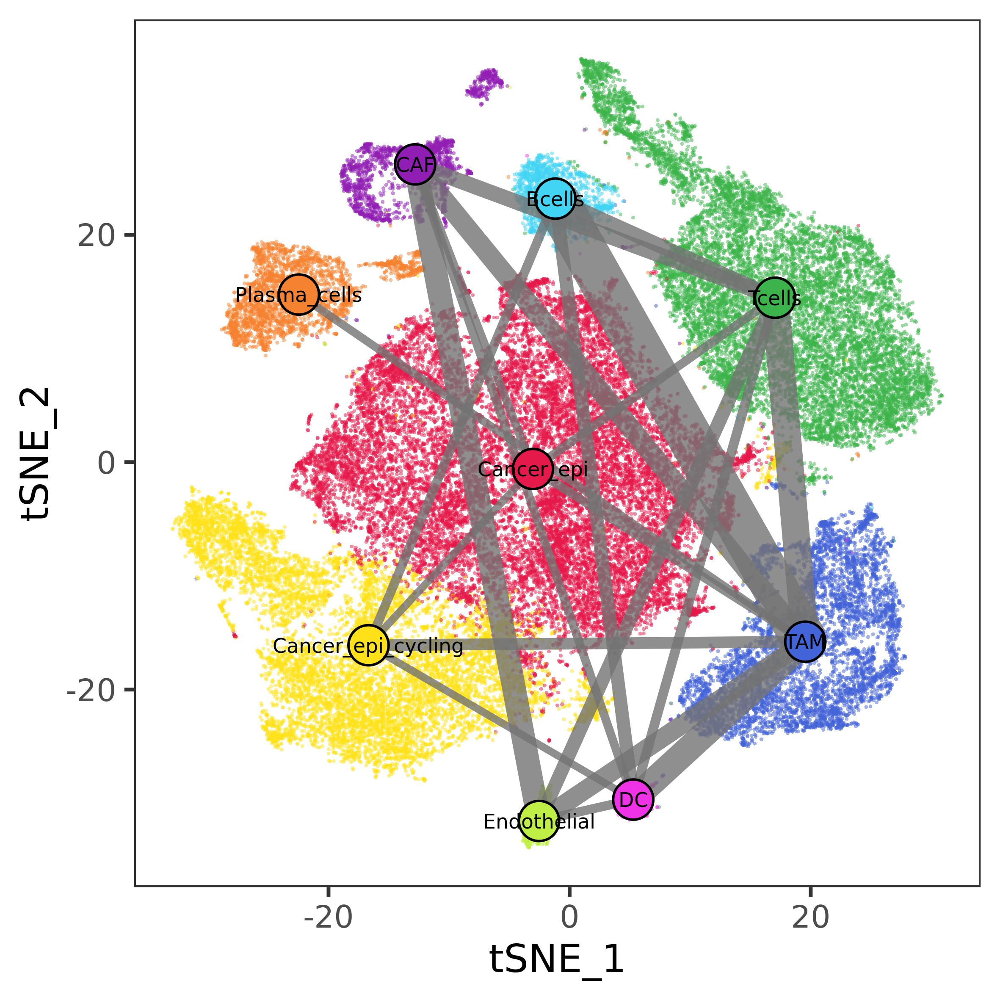
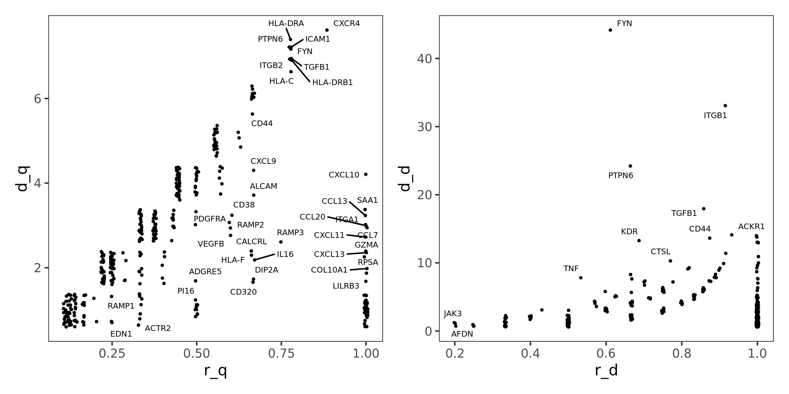

Ulisse pipeline: crosstalk analysis of single cell data
Alice Chiodi
Ulisse_pipeline.RmdIn this vignette we will describe the usage of Ulisse. We will use already processed data from (Pal et al. 2021) and some Seurat v4 (Hao et al. 2021) functions to obtain input data. As you will see, the usage of Seurat is not mandatory, as the same data can be obtained with other tools. Moreover, the same workflow can be applied to other data (i.e.: expression, mutation, combination of the two, etc…), or even applied only partially (i.e.: intracellular crosstalk only on bulk data).
This vignette will describe Ulisse usage to analyse communications among cell types, intracellular crosstalk in Cancer-Associated Fibroblasts (CAF), and integrated crosstalk of cancer-CAF clusters. In general, crosstalk calculation needs:
- gene sets
- gene scores
- gene-gene interaction network.
Gene-sets definition depends on the test used: in cell-cell communication the gene sets are the cell types (or clusters), while in intracellular analysis they represents cellular functions or mechanisms, defined by using public (pathway) databases. In our example, we will use MSigDB Hallmarks database.
The definition of gene scores is up to the user, the data under analysis and the focus of the study. Here we will use a score calculated over Differentially Expressed Genes (DEG) testing, to use a statistic that summarize both the significance and the importance of the gene in a cell type over the entire dataset. It is important to note, that the analysis can be done without providing gene weights, by setting them = 1.
Equal to the gene sets, the definition of interaction network depends on the test: communication analysis needs a communication network, while other gene/protein interaction network can be suitable for intracellular analysis. Here, we will use Omnipath (Türei et al. 2021) and String (Szklarczyk et al. 2021) networks, respectively.
The code used in this vignette replicates the one used for Ulisse publication.
library(Ulisse)
library(Seurat)
library(MAST)
library(OmnipathR)
library(igraph)
library(ggplot2)
library(ggraph)
library(ggrepel)
library(msigdbr)
library(patchwork)Data uploading, preparation and Differential Expression testing
As an example we will use Triple Negative Breast Cancer(TNBC) data from (Pal et al. 2021). Already processed data can be obtained at (Chen and Smyth 2022).
tnbc <- readRDS("17058077/SeuratObject_TNBC.rds")
DimPlot(tnbc, group.by = "integrated_snn_res.0.1")
The dataset is composed by 8 samples integrated with Seurat method.
Processing of the data, described in detail in the article, resulted in
9 cluster. In the paper they provide cluster annotation, which is not
present in the tnbc object. We used
SeuratObject_TNBCSub.rds and paper plots to reconstruct
cluster annotation (not shown).
tnbc_ct <- setNames(c("Cancer_epi", "Tcells", "Cancer_epi_cycling", "TAM", "Plasma_cells", "CAF", "Bcells", "DC", "Endothelial"), 0:8)
tnbc$cell_type <- tnbc_ct[as.character(tnbc$integrated_snn_res.0.1)]
ct_pal <- pals::trubetskoy(length(tnbc_ct))
names(ct_pal) <- names(tnbc_ct)
DimPlot(tnbc, group.by = "cell_type", cols = ct_pal)
Once obtained cluster annotation, we test for differential expression
(DE) by using MAST algorithm. DE results will then be used
to calculate a cluster-specific gene score, which is defined as \((log_{2}(Fold
Change))(-log_{10}(adjusted-p-value))\). To reduce noise, only
scores of genes with: \(adjusted-p-value <
0.05\) & \(log2(Fold Change) >
0.5\) will be considered, all the other are set to 0. We will
normalize the score over the maximum value to obtain more intelligible
values.
#this may take a while
#to reduce change the test, the results will be different
DEG_tnbc <- FindAllMarkers(tnbc, test = "MAST", assay = "RNA")
DEG_tnbc$p_adj_BH <- p.adjust(DEG_tnbc$p_val, method = "BH")
DEG_tnbc$p_adj_BH[DEG_tnbc$p_adj_BH == 0] <- min(DEG_tnbc$p_adj_BH[DEG_tnbc$p_adj_BH != 0])
DEG_tnbc$score <- DEG_tnbc$avg_log2FC * (-log10(DEG_tnbc$p_adj_BH))
DEG_tnbc$score <- DEG_tnbc$score/max(DEG_tnbc$score) #normalize score values
DEG_tnbc$score[!(DEG_tnbc$p_adj_BH < 0.05 & DEG_tnbc$avg_log2FC > 0.5)] <- 0 #denoisingIntracellular crosstalk
In this section we will demonstrate the usage of Ulisse to analyse intracellular crosstalk. To do so, we will focus on Cancer epithelial cell type.
Inputs
We need:
- biological network: here we will use String v12, which is provided within NPAtools package
- gene scores: we will use “Cancer_epi” DEGs
- gene sets: here we will use MsigDB hallmarks, downloaded from msigdbr package
#biological network
data(NAPtools)
V(stringv12)$name <- V(stringv12)$symbol #stringv12 names are entry id, but here we need symbols.
#Without this code, the adjacency matrix rownames and colnames will be the entry ids
g.adj <- as_adjacency_matrix(stringv12, sparse = F, type = "both")
#gene set database, mapped to string genes
hallmarks <- msigdbr(category = "H")
ptw.H <- data.frame(hallmarks[, c("gs_name", "gene_symbol")])
ptw.H <- ptw.H[ptw.H$gene_symbol %in% V(stringv12)$symbol,]Once obtained gene set and gene scores, these needs to be coupled
(via build_S_list()) to build a weighted gene set list. At
this point, this list can be provided to Ulisse, together with the
network, to perform the analysis with gs_cross_talk()
function. There are two way to use build_S_list(): one is
shown here, where the gene sets are provided as a table, together with a
named vector for weights; the other is shown in later in the
vignette.
g.w <- DEG_tnbc[DEG_tnbc$cluster == "Cancer_epi",]
g.w <- setNames(g.w$score, g.w$gene)
gs_list <- build_S_list(S_tab = ptw.H, g_u = g.w, universe = V(stringv12)$symbol, min_size = NULL, max_size = NULL)crosstalk calculation
Now we have everything ready for intracellular crosstalk calculation.
Here, we will set ct_type = "intracellular", so the
function will not consider overlapping genes, as they are the same and
shouldn’t be considered to avoid using gene-set internal links. This
return a crosstalk table
can_ct <- gs_cross_talk(S_list = gs_list,
A = g.adj,
k = 99,
ct_type = "intracellular",
mc_cores_perm = 2, perm_link = "degree", perm_weights = "degree", cut_par = NULL, mc_cores_ct = 2)
can_ct[1:5, ]#> S1_name S2_name c
#> 1 HALLMARK_ADIPOGENESIS HALLMARK_ESTROGEN_RESPONSE_LATE 0.011211030
#> 2 HALLMARK_ADIPOGENESIS HALLMARK_KRAS_SIGNALING_DN 0.025489284
#> 3 HALLMARK_ADIPOGENESIS HALLMARK_MTORC1_SIGNALING 0.006278995
#> 4 HALLMARK_ADIPOGENESIS HALLMARK_MYC_TARGETS_V1 0.042996954
#> 5 HALLMARK_ALLOGRAFT_REJECTION HALLMARK_ANDROGEN_RESPONSE 0.019436802
#> S1_size S2_size S1_S2_size S2_S1_size dL L r_c u1 u2
#> 1 29 54 2 1 2 8 0.25 0.1429003 0.07845351
#> 2 33 15 1 1 1 1 1.00 0.1129081 0.22575250
#> 3 32 48 1 1 1 20 0.05 0.0741845 0.08464026
#> 4 31 53 1 4 4 16 0.25 0.0741845 0.57959484
#> 5 61 28 1 1 1 5 0.20 0.1308974 0.14848887
#> S1 S2 s pA pU p
#> 1 ATP5PO;NDUFB7 COX6C 0.014607631 0.111 0.078 0.0497771929
#> 2 MYLK CALML5 0.079114437 0.015 0.005 0.0007873517
#> 3 ATP5PO PPA1 0.003674212 0.248 0.288 0.2599206020
#> 4 ATP5PO RPLP0;RPS2;RPS3;RPS5 0.078286265 0.211 0.010 0.0151098521
#> 5 CDKN2A CCND1 0.045286442 0.050 0.011 0.0046780758Results can be visualized as scatterplot, by plotting the score
(s) and the crosstalk saturation (`r_c``) affected over the
possible. This visualization allows to prioritize genes on the
percentage of affected crosstalks.
can_ct$sign <- "M_A | M_U > 0.01"
can_ct$sign[can_ct$pA < 0.01 | can_ct$pU < 0.01] <- "M_A | M_U < 0.01"
can_ct$sign[can_ct$pA < 0.01 & can_ct$pU < 0.01] <- "M_A & M_U < 0.01"
ggplot(can_ct, aes(x = r_c, y = s, shape = sign)) +
geom_jitter(position = position_jitter(seed = 1), shape = 21) +
scale_fill_manual("", values = c("white", "gray70", "gray30"),
breaks = c("M_A | M_U > 0.01", "M_A | M_U < 0.01", "M_A & M_U < 0.01")) +
theme_test() 
Otherwise, we can visualize results as a network. Here, we will
consider only significant interactions and set different color for fully
(r_c = 1) or partially (r_c < 1) affected
crosstalks.
can_ct <- can_ct[can_ct$pA < 0.01 | can_ct$pU < 0.01, ]
g.ct <- graph_from_data_frame(can_ct, directed = F)
ly <- create_layout(g.ct, "nicely")
ggraph(g.ct, layout = ly) +
geom_edge_link(aes(color = sign)) +
scale_edge_color_manual("", values = c("gray70", "gray30"),
breaks = c("M_A | M_U < 0.01", "M_A & M_U < 0.01")) +
geom_node_point(shape = 21, fill = "white", size = 3) +
theme_graph() 
Crosstalk gene classification
Gene classification analysis is performed by extracting crosstalk and
interaction data for genes occurring in significant crosstalks, and
comparing them to a reference model, to calculate interactor and
crosstalk diversity and saturation. The general reference model should
be built on the same data of the case study, but without considering
weight differences among genes (so, all genes should have u = 1). In
this way, we can normalize crosstalk and interactor diversity of each
gene affected by the condition, over all possibilities. To do so, we
need to perform crosstalk analysis and gene classification of the
reference model, to then use it in our cancer cell gene classification
analysis, as described below. Note that here,
build_S_list() is differently, as gene sets are provided as
a three column table: gene set names, gene names and weights. This
format should be used when genes have different weights in the gene sets
(as in intercellular crosstalk).
ptw.H$score <- 1
gs_list_general <- build_S_list(S_tab = ptw.H, universe = V(stringv12)$symbol, min_size = NULL, max_size = NULL)
general <- gs_cross_talk(S_list = gs_list_general,
A = g.adj, k = 0,
ct_type = "intracellular",
mc_cores_perm = 2, perm_link = "degree",
perm_weights = "degree", cut_par = NULL,
mc_cores_ct = 2)
general_cl <- gene_classification(gs_ct = general, A = g.adj, n_cores = 2)
can_class <- gene_classification(gs_ct = caf_ct,#only significant ones
A = g.adj,
ct_ref = general_cl, #general model for normalization
n_cores = 2)
can_class[, 1:5]#> gene r_q r_d d_q d_d
#> 1 APP 0.15625000 0.11904762 5 5
#> 2 ATP5F1C 0.05263158 0.14285714 1 4
#> 3 ATP5PO 0.06250000 0.14814815 1 4
#> 4 CALML5 0.13043478 0.04166667 3 1
#> 5 CCND1 0.15625000 0.10000000 5 3
#> d_q_S
#> 1 HALLMARK_CHOLESTEROL_HOMEOSTASIS;HALLMARK_ESTROGEN_RESPONSE_LATE;HALLMARK_MTORC1_SIGNALING;HALLMARK_HYPOXIA;HALLMARK_ANDROGEN_RESPONSE
#> 2 HALLMARK_MYC_TARGETS_V1
#> 3 HALLMARK_MYC_TARGETS_V1
#> 4 HALLMARK_MYOGENESIS;HALLMARK_ADIPOGENESIS;HALLMARK_EPITHELIAL_MESENCHYMAL_TRANSITION
#> 5 HALLMARK_CHOLESTEROL_HOMEOSTASIS;HALLMARK_P53_PATHWAY;HALLMARK_TGF_BETA_SIGNALING;HALLMARK_UV_RESPONSE_UP;HALLMARK_ALLOGRAFT_REJECTION
#> d_d_gene q d
#> 1 DBI;KLK11;LSR;CLU;GAPDH 32 42
#> 2 RPLP0;RPS2;RPS3;RPS5 19 28
#> 3 RPLP0;RPS2;RPS3;RPS5 16 27
#> 4 MYLK 23 24
#> 5 CDKN2A;CTNNB1;CDKN2B 32 30
#> q_S
#> 1 HALLMARK_APICAL_JUNCTION;HALLMARK_BILE_ACID_METABOLISM;HALLMARK_CHOLESTEROL_HOMEOSTASIS;HALLMARK_COAGULATION;HALLMARK_COMPLEMENT;HALLMARK_EPITHELIAL_MESENCHYMAL_TRANSITION;HALLMARK_ESTROGEN_RESPONSE_EARLY;HALLMARK_ESTROGEN_RESPONSE_LATE;HALLMARK_FATTY_ACID_METABOLISM;HALLMARK_GLYCOLYSIS;HALLMARK_HEDGEHOG_SIGNALING;HALLMARK_HEME_METABOLISM;HALLMARK_HYPOXIA;HALLMARK_IL2_STAT5_SIGNALING;HALLMARK_INFLAMMATORY_RESPONSE;HALLMARK_KRAS_SIGNALING_DN;HALLMARK_MTORC1_SIGNALING;HALLMARK_NOTCH_SIGNALING;HALLMARK_OXIDATIVE_PHOSPHORYLATION;HALLMARK_PEROXISOME;HALLMARK_PI3K_AKT_MTOR_SIGNALING;HALLMARK_REACTIVE_OXYGEN_SPECIES_PATHWAY;HALLMARK_SPERMATOGENESIS;HALLMARK_UNFOLDED_PROTEIN_RESPONSE;HALLMARK_UV_RESPONSE_DN;HALLMARK_UV_RESPONSE_UP;HALLMARK_WNT_BETA_CATENIN_SIGNALING;HALLMARK_XENOBIOTIC_METABOLISM;HALLMARK_IL6_JAK_STAT3_SIGNALING;HALLMARK_ADIPOGENESIS;HALLMARK_ALLOGRAFT_REJECTION;HALLMARK_ANDROGEN_RESPONSE
#> 2 HALLMARK_P53_PATHWAY;HALLMARK_PROTEIN_SECRETION;HALLMARK_TNFA_SIGNALING_VIA_NFKB;HALLMARK_UNFOLDED_PROTEIN_RESPONSE;HALLMARK_XENOBIOTIC_METABOLISM;HALLMARK_ADIPOGENESIS;HALLMARK_ALLOGRAFT_REJECTION;HALLMARK_BILE_ACID_METABOLISM;HALLMARK_DNA_REPAIR;HALLMARK_E2F_TARGETS;HALLMARK_ESTROGEN_RESPONSE_LATE;HALLMARK_GLYCOLYSIS;HALLMARK_HEME_METABOLISM;HALLMARK_INTERFERON_ALPHA_RESPONSE;HALLMARK_INTERFERON_GAMMA_RESPONSE;HALLMARK_KRAS_SIGNALING_DN;HALLMARK_MTORC1_SIGNALING;HALLMARK_MYC_TARGETS_V1;HALLMARK_MYC_TARGETS_V2
#> 3 HALLMARK_ALLOGRAFT_REJECTION;HALLMARK_DNA_REPAIR;HALLMARK_E2F_TARGETS;HALLMARK_ESTROGEN_RESPONSE_LATE;HALLMARK_FATTY_ACID_METABOLISM;HALLMARK_HEME_METABOLISM;HALLMARK_HYPOXIA;HALLMARK_KRAS_SIGNALING_DN;HALLMARK_MTORC1_SIGNALING;HALLMARK_MYC_TARGETS_V1;HALLMARK_P53_PATHWAY;HALLMARK_PROTEIN_SECRETION;HALLMARK_TNFA_SIGNALING_VIA_NFKB;HALLMARK_UNFOLDED_PROTEIN_RESPONSE;HALLMARK_UV_RESPONSE_UP;HALLMARK_XENOBIOTIC_METABOLISM
#> 4 HALLMARK_MTORC1_SIGNALING;HALLMARK_MYC_TARGETS_V1;HALLMARK_MYOGENESIS;HALLMARK_P53_PATHWAY;HALLMARK_PEROXISOME;HALLMARK_PI3K_AKT_MTOR_SIGNALING;HALLMARK_PROTEIN_SECRETION;HALLMARK_SPERMATOGENESIS;HALLMARK_TGF_BETA_SIGNALING;HALLMARK_UNFOLDED_PROTEIN_RESPONSE;HALLMARK_UV_RESPONSE_DN;HALLMARK_ADIPOGENESIS;HALLMARK_ALLOGRAFT_REJECTION;HALLMARK_ANDROGEN_RESPONSE;HALLMARK_APICAL_JUNCTION;HALLMARK_APOPTOSIS;HALLMARK_COMPLEMENT;HALLMARK_EPITHELIAL_MESENCHYMAL_TRANSITION;HALLMARK_ESTROGEN_RESPONSE_EARLY;HALLMARK_ESTROGEN_RESPONSE_LATE;HALLMARK_FATTY_ACID_METABOLISM;HALLMARK_GLYCOLYSIS;HALLMARK_HYPOXIA
#> 5 HALLMARK_ANGIOGENESIS;HALLMARK_APICAL_JUNCTION;HALLMARK_BILE_ACID_METABOLISM;HALLMARK_CHOLESTEROL_HOMEOSTASIS;HALLMARK_DNA_REPAIR;HALLMARK_E2F_TARGETS;HALLMARK_GLYCOLYSIS;HALLMARK_HEME_METABOLISM;HALLMARK_HYPOXIA;HALLMARK_IL2_STAT5_SIGNALING;HALLMARK_IL6_JAK_STAT3_SIGNALING;HALLMARK_INFLAMMATORY_RESPONSE;HALLMARK_INTERFERON_GAMMA_RESPONSE;HALLMARK_KRAS_SIGNALING_UP;HALLMARK_MITOTIC_SPINDLE;HALLMARK_MTORC1_SIGNALING;HALLMARK_MYC_TARGETS_V1;HALLMARK_MYC_TARGETS_V2;HALLMARK_MYOGENESIS;HALLMARK_P53_PATHWAY;HALLMARK_PI3K_AKT_MTOR_SIGNALING;HALLMARK_REACTIVE_OXYGEN_SPECIES_PATHWAY;HALLMARK_SPERMATOGENESIS;HALLMARK_TGF_BETA_SIGNALING;HALLMARK_UNFOLDED_PROTEIN_RESPONSE;HALLMARK_UV_RESPONSE_DN;HALLMARK_UV_RESPONSE_UP;HALLMARK_WNT_BETA_CATENIN_SIGNALING;HALLMARK_XENOBIOTIC_METABOLISM;HALLMARK_HEDGEHOG_SIGNALING;HALLMARK_ADIPOGENESIS;HALLMARK_ALLOGRAFT_REJECTION
#> d_gene
#> 1 APLP2;APOE;ACHE;APBB1;TGFB2;DBI;TNFRSF21;CNTN1;GNAI2;CLU;CASP6;PSEN1;APOA1;TTR;APOC2;APOC3;F11;APOC1;GNG2;PRSS3;PLA2G7;APOA4;PRSS2;MAPT;LSR;KLK11;HSD17B10;SNCA;FOXO3;HEBP1;GAPDH;PRNP;SELENOS;CALR;APH1A;PSENEN;IDE;APOM;APBB2;MAPK8IP2;LCAT;NCSTN
#> 2 CMPK1;MRPL3;RPL3L;RPL9;RPS9;CD74;ABCG4;AK3;POLR2C;POLR1C;HPRT1;SEC61A1;CDCA8;LHPP;ABCG2;ATP6V1B1;PPA1;RPS2;RPS3;RPS5;RPLP0;TUFM;KARS1;MRTO4;RPS14;IMP3;KDM6B;EI24
#> 3 MRPL3;RPL9;RPS9;HPRT1;SEC61A1;CDCA8;COX6C;SDHD;ATP6V0A1;ACKR3;ATP6V1B1;ATP5MC1;ATP6V1D;PPA1;RPS2;RPS3;RPS5;RPLP0;TUFM;COX5A;KARS1;ATP6V1F;RPS14;IMP3;SLC25A3;RER1;KDM6B
#> 4 MYLK;NOS2;CAMKK2;HRAS;PLCG1;CAV1;PPP3R1;CALM3;ADCY1;HSP90AA1;PYGB;PYGL;PHKA2;CACNA1H;PYGM;HSP90B1;HSP90AB1;CAMK2B;CAV3;CAMK4;PPP1CA;ITPR2;CAV2;PHKG2
#> 5 CDKN2C;CCND2;CDKN2A;CCND3;CDK6;SYMPK;CTNNB1;CDK2;CDKN1B;CDKN1A;AR;PCNA;CDK1;CDC25A;CDK4;CKS1B;FOS;CUL1;KAT2B;CDKN1C;STAT3;FBXO4;TOR1AIP2;GSK3B;RB1;CDKN2B;HDAC3;CDKN2D;SKP2;ESR1Here we can visualize saturations of crosstalk diversity and
interactor diversity (r_q and r_d,
respectively), which are measure normalized on the general model,
compared to their absolute values (d_q and
d_d, respectively). This visualization allows to identify
genes whose interactors or crosstalks diversity are fully or only
partially affected. Here we can also color genes by their initial value,
to identify interesting genes (in terms of r_q and
r_d) which might not be prioritized by DEG analysis.
can_class$u <- g.w[can_class$gene]
p1 <- ggplot(can_class, aes(x = r_q, y = d_q, label = gene, colour = u)) +
geom_jitter(position = position_jitter(seed = 1), size = 0.5) +
ggrepel::geom_text_repel(position = position_jitter(seed = 1), size = 2, color = "black") +
scale_color_gradientn(colours = pals::brewer.greys(6)[2:6]) +
theme_test()
p2 <- ggplot(can_class, aes(x = r_d, y = d_d, label = gene, colour = u)) +
geom_jitter(position = position_jitter(seed = 1), size = 0.5) +
ggrepel::geom_text_repel(position = position_jitter(seed = 1), size = 2, color = "black") +
scale_color_gradientn(colours = pals::brewer.greys(6)[2:6]) +
theme_test()
p1 + p2 + plot_layout(guides = 'collect')
Intercellular Communication
input: omnipath communication network
As described before, we need a communication network for communication analysis. Here we will use OmnipathR package to download the intercellular network. The data reported here are the ones used in the publication (downloaded in September, 2024). Later updates of Omnipath database may yield different results.
intercell_net <- import_intercell_network(interactions_param = list("datasets" = "omnipath"),
transmitter_param = list(
categories = c('ligand')),
receiver_param = list(
categories =c('receptor')), entity_types = "protein")
g.intercell <- graph_from_edgelist(as.matrix(unique(intercell_net[,c("source_genesymbol", "target_genesymbol")])),
directed = F)
g.adj_intercell <- as_adjacency_matrix(g.intercell, sparse = F, type = "both")cell-cell communication analysis
Once obtained the input, we can build the weighted gene-set list. As
described before, here we should use build_S_list() by
providing the gene sets as a three column table. In this way, we can
build a gene set for each cell type, with different weights for the same
genes.
tnbc_list <- build_S_list(S_tab = DEG_tnbc[, c("cluster", "gene", "score")],
universe = V(g.intercell)$name,
min_size = NULL, max_size = NULL)
tnbcCCC <- gs_cross_talk(S_list = tnbc_list,
A = g.adj_intercell,
k = 99,
ct_type = "communication",
mc_cores_perm = 2, perm_link = "degree", perm_weights = "degree",
cut_par = NULL,
mc_cores_ct = 2)By specifying ct_type = "communication", the
gs_cross_talk() function will consider genes shared among
gene sets in the calculation, as they are genes in different cell types
with different score, and return also a list of interacting genes
tables, one for each cell type pair. The output will then be a list with
two object: * the results of crosstalk calculation
tnbcCCC$ct_res[1:5,]#> S1_name S2_name c S1_size S2_size S1_S2_size S2_S1_size
#> 1 Bcells CAF 0.62820171 246 312 11 23
#> 2 Bcells Cancer_epi 0.06259519 246 240 5 4
#> 3 Bcells Cancer_epi_cycling 0.26639117 246 201 14 3
#> 4 Bcells DC 0.58259489 246 286 23 22
#> 5 Bcells Endothelial 0.19706308 246 354 13 30
#> dL L r_c u1 u2
#> 1 25 418 0.05980861 1.8159851 5.2910707
#> 2 6 425 0.01411765 0.7316357 0.3078850
#> 3 14 367 0.03814714 2.6078636 0.2809384
#> 4 61 475 0.12842105 3.5281022 1.1899466
#> 5 33 523 0.06309751 1.4711100 2.4289122
#> S1
#> 1 TGFB1;SELL;CXCR4;CD69;PTPRC;HLA-DRA;EZR;PTPN6;HLA-DPA1;HLA-DRB1;LTB
#> 2 TGFB1;CD74;CXCR4;TNFRSF14;CD69
#> 3 HLA-DQB1;HLA-DPB1;HLA-DRA;HLA-DPA1;HLA-DRB1;HLA-DQA1;HLA-DOB;HLA-DMA;HLA-DMB;HLA-DRB5;CD74;CXCR4;TNFRSF14;EZR
#> 4 HLA-DMA;HLA-DMB;PTPN6;CD37;CD19;CD53;HLA-DQB1;HLA-DPB1;HLA-DRA;HLA-DPA1;HLA-DRB1;HLA-DQA1;HLA-DOB;HLA-DRB5;IL16;CD40;TGFB1;TNFRSF13C;TNFRSF13B;CD74;CXCR4;CSK;ADGRE5
#> 5 PTPN6;CSK;SELL;PLCG2;TGFB1;HLA-DRA;HLA-DRB1;EZR;LTB;CXCR4;PTPRC;CCR6;CD53
#> S2
#> 1 DCN;MMP2;FSTL1;VCAN;CXCL12;MYL9;THBS1;LGALS1;CD63;MXRA5;ITGB1;VCAM1;SDC2;ITGAV;IL6ST;CXCL14;ITGB5;LPP;TGFBR2;GAL;CD81;TNFRSF1A;TGFBR3
#> 2 APP;MIF;CXCL14;S100A8
#> 3 CTSV;MIF;ICAM1
#> 4 CD74;CSF2RB;HLA-DRA;CD4;LTB;HLA-DRB1;CD37;CTSS;CXCR4;LYN;TNFSF13B;CD53;HLA-DMB;SYK;TNFSF9;HLA-DMA;HLA-C;LGMN;TGFBR2;TGFB1;PECAM1;CD55
#> 5 PECAM1;CD34;INSR;KDR;ACVRL1;TGFBR2;IL6ST;CD81;MMP2;FSTL1;ITGB1;APP;LIFR;VCAM1;TNFRSF1A;CXCL12;TGFBR3;THBS1;CSF2RB;ITGAV;LGALS9;TGFB1;CD63;JAK1;BCR;TNFSF10;HLA-C;LPP;CD109;ICAM1
#> s pA pU p
#> 1 0.61295845 0.954 0.023 1.057462e-01
#> 2 0.02719497 0.913 0.128 3.677411e-01
#> 3 0.96603045 0.020 0.001 2.363956e-04
#> 4 2.81351583 0.001 0.001 1.481551e-05
#> 5 0.02875915 0.998 0.348 7.145970e-01- a list, with a table for each cell type pair with the detail of the interactions.
tnbcCCC$ct_info$`CAF|Cancer_epi_cycling`[1:5,]#> S1_name S1_gene S2_name S2_gene u12
#> 1 CAF DDR1 Cancer_epi_cycling CDK1 0.000000000
#> 2 CAF DDR1 Cancer_epi_cycling TM4SF1 0.000000000
#> 3 CAF PLAT Cancer_epi_cycling ANXA2 0.016909091
#> 4 CAF LGALS3 Cancer_epi_cycling ANXA2 0.000000000
#> 5 CAF APOE Cancer_epi_cycling LSR 0.002431027The communication network can be visualized overlapped to the map of
the cells by using plot_communication_network(). Here we
will use only significant communication (\(\alpha\) < 0.01).
ccc_res <- tnbcCCC$ct_res
ccc_res <- ccc_res[ccc_res$pA < 0.01 | ccc_res$pU < 0.01, ]
cl_cell <- data.frame(cell = rownames(tnbc@meta.data),
cluster = tnbc$cell_type, stringsAsFactors = F)
plot_communication_network(cell_emb = tnbc@reductions$tsne@cell.embeddings,
cl_res = ccc_res,
cl_cell = cl_cell,
palette = ct_pal, #palette built at the beginning of the vignette
e_scale = 9, label = T,
save_file = NULL)
CT gene classification
Here, in communication analysis, reference model should be built by using all cell type, and all tested genes but without weights (u = 1). In this way, we can normalize the number of crosstalk and interactor of each gene affected by the condition, over all possibilities. To do so, we need to perform crosstalk analysis and gene classification of the reference model, to then use it in our TNBC communication gene classification analysis, as described below.
DEG_tnbc_mod <- DEG_tnbc
DEG_tnbc_mod$score <- 1 #to consider all genes with same weigths
tnbc_general <- build_S_list(S_tab = DEG_tnbc_mod[, c("cluster", "gene", "score")],
universe = V(g.intercell)$name, min_size = NULL, max_size = NULL)
general_tnbcCCC <- gs_cross_talk(S_list = tnbc_general,
A = g.adj_intercell,
k = 0,
ct_type = "communication",
mc_cores_perm = 2, mc_cores_ct = 2,
perm_link = "degree", perm_weights = "degree", cut_par = NULL) #geneal CCC model
general_cl <- gene_classification(gs_ct = general_tnbcCCC$ct_res,
A = g.adj_intercell, n_cores = 2) #general gene classification of CCC genes
fr.tnbc <- gene_classification(gs_ct = ccc_res, #only significant communications
A = g.adj_intercell,
ct_ref = general_cl, #general gene classification to calculate degree ratio and crosstalk activity
n_cores = 2)
fr.tnbc[, 1:5]#> gene r_q r_d d_q d_d d_q_S
#> 1 ACKR1 0.3750000 1 3 14 TAM;Tcells;CAF
#> 2 ACTR2 0.3333333 1 1 1 Endothelial
#> 3 ACVRL1 0.4444444 1 4 2 TAM;Tcells;CAF;DC
#> 4 ADAM15 0.1250000 1 1 1 Tcells
#> 5 ADGRE5 0.5000000 1 2 1 DC;Bcells
#> d_d_gene
#> 1 CXCL9;CXCL10;CCL2;CXCL2;CXCL1;CXCL11;CCL13;CCL7;CXCL8;CCL5;CXCL13;CCL18;CXCL3;CCL8
#> 2 LDLR
#> 3 TGFB1;TGFB3
#> 4 FYN
#> 5 CD55
#> q d
#> 1 8 14
#> 2 3 1
#> 3 9 2
#> 4 8 1
#> 5 4 1
#> q_S
#> 1 Plasma_cells;TAM;Tcells;Bcells;CAF;Cancer_epi;Cancer_epi_cycling;DC
#> 2 Endothelial;Plasma_cells;Bcells
#> 3 Cancer_epi;Cancer_epi_cycling;DC;Endothelial;Plasma_cells;TAM;Tcells;Bcells;CAF
#> 4 Cancer_epi;Cancer_epi_cycling;DC;Endothelial;Plasma_cells;TAM;Tcells;Bcells
#> 5 DC;Plasma_cells;TAM;Bcells
#> d_gene
#> 1 CCL5;CXCL2;CXCL9;CXCL10;CCL2;CXCL1;CXCL8;CXCL11;CCL13;CCL7;CCL8;CXCL13;CCL18;CXCL3
#> 2 LDLR
#> 3 TGFB1;TGFB3
#> 4 FYN
#> 5 CD55Now we can plot saturation of interactor diversity and crosstalk diversity compared to their absolute values, to prioritize genes, as done before in Intracellular crosstalk section
p1 <- ggplot(fr.tnbc, aes(x = r_q, y = d_q, label = gene)) +
geom_jitter(position = position_jitter(seed = 1), size = 0.5) +
ggrepel::geom_text_repel(position = position_jitter(seed = 1), size = 2) +
theme_test()
p2 <- ggplot(fr.tnbc, aes(x = r_d, y = d_d, label = gene)) +
geom_jitter(position = position_jitter(seed = 1), size = 0.5) +
ggrepel::geom_text_repel(position = position_jitter(seed = 1), size = 2) +
theme_test()
p1 + p2 
Integrated crosstalk
Lastly, we can perform integrated crosstalk analysis, which study the interaction between genes involved in a communication with a cell type and the intracellular mechanisms (pathways). Here, we will study cancer - CAF communication and the crosstalk with Hallmarks pathways. We can perform this analysis in two ways:
- Single integrated analysis: focused only on cancer genes involved in the communication with CAFs, and their crosstalks with Hallmarks pathways involving altered genes
- Integrated analysis: focused on multiple inter-intracellular crosstalks. Here we will apply this analysis on cancer-CAF communication, to obtain results in both directions
In both analysis, we can again filter the results to maintain only the significant ones, as done for intercellular and intracellular.
Single integrated analysis
To perform this analysis we simply need the data already used for
intracellular and intercellular crosstalks. In detail, we need the
cancer communication gene set, but considering as altered (with u >
0) only the genes involved in the communication with CAFs, and the
pathway gene set list created for intracellular communication.
single_integrated_cross_talk() takes as input a gene set
list, composed by both these inputs, the name of the communicating gene
set (ref), and a biological network (here we will use
String, as done in intrecellular section). The function returns a table
with the same structure of the ones obtained with
gs_cross_talk(). Here, S1 is always the communication gene
set ("Cancer_epi" in this case), as this function do not
calculate the the crosstalk between each possible pair, to not rerun
intracellular analysis and do not complicate null models building.
ccc_info <- tnbcCCC$ct_info[["CAF|Cancer_epi"]]
can_ccc <- tnbc_list$Cancer_epi
can_ccc[!names(can_ccc) %in% unique(ccc_info$S2_gene[ccc_info$u12 > 0])] <- 0
gs_list_int <- gs_list
gs_list_int[["Cancer_epi"]] <- can_ccc
integr_can <- single_integrated_cross_talk(S_list = gs_list_int, #Hallmark gene set list built for intracellular analysis
ref = "Cancer_epi", #name of the communication gene set
A = g.adj, #String used for intracellular analysis
k = 99,
perm_link = "degree", perm_weights = "degree",
cut_par = NULL, mc_cores_perm = 2, mc_cores_ct = 2)
integr_can[1:5, ]#> S1_name S2_name c S1_size S2_size
#> 11 Cancer_epi HALLMARK_ALLOGRAFT_REJECTION 0.01775875 200 31
#> 12 Cancer_epi HALLMARK_ANDROGEN_RESPONSE 0.01993079 229 27
#> 13 Cancer_epi HALLMARK_APOPTOSIS 0.01055460 213 38
#> 14 Cancer_epi HALLMARK_CHOLESTEROL_HOMEOSTASIS 0.02550742 229 13
#> 15 Cancer_epi HALLMARK_COAGULATION 0.01495281 225 18
#> S1_S2_size S2_S1_size dL L r_c u1 u2 S1
#> 11 1 2 2 66 0.03030303 0.08581545 0.20694122 RPSA
#> 12 2 1 2 29 0.06896552 0.19987201 0.09971779 APP;LSR
#> 13 1 1 1 39 0.02564103 0.13183863 0.08005698 PTPRF
#> 14 2 2 2 16 0.12500000 0.25920987 0.19745251 APP;PTPRF
#> 15 1 1 1 28 0.03571429 0.12737124 0.11739553 APP
#> S2 s pA pU p
#> 11 RPL39;RPS19 0.04759216 0.111 0.002 2.089649e-03
#> 12 DBI 0.06587219 0.045 0.001 4.953982e-04
#> 13 CTNNB1 0.02288445 0.140 0.006 6.788971e-03
#> 14 CLU;CTNNB1 0.10891385 0.004 0.001 5.371686e-05
#> 15 CLU 0.03774268 0.083 0.004 2.991445e-03Integrated analysis
To perform this analysis we need:
- the results of cell-cell communication, in a form of a list with the detail of all the communication we want to study (here only CAF - Cancer cycling)
- weighted gene set lists: we need the gene set built for cell-cell communication, as also intracellular gene sets. Here so far we have analyzed only cancer intracellular crosstalk, so we need to obtain CAF list.
- a biological network: here we will again use string network, as
before.
integrated_cross_talk()function is a wrapper ofsingle_integrated_cross_talk(), that run this analysis on each communication present inccc_list, in both directions, and returns a table with all integrated analysis performed. To discriminate different communicating gene sets, the first column contains the name fo theccc_listobject used
# 1) communication results: a list with details of all communications we want to investigate
ccc_info <- tnbcCCC$ct_info["CAF|Cancer_epi"]
# 2) gene set list: we are missing Cancer cycling ones, so we built it as done for CAF
g.wCaf <- DEG_tnbc[DEG_tnbc$cluster == "CAF",]
g.wCaf <- setNames(g.wCaf$score, g.wCaf$gene)
gs_listCaf <- build_S_list(S_tab = ptw.H[, 1:2], g_u = g.wCaf, universe = V(stringv12)$symbol, min_size = NULL, max_size = NULL)
#here is the list both intracellular gene set lists
gs_list_tot <- list(CAF = gs_listCaf,
Cancer_epi = gs_list)
integrated_tnbc <- integrated_cross_talk(cl_list = tnbc_list, #CCC gene sets list
ccc_list = ccc_info, #CCC detailed results of the communications of interest
gs_list = gs_list_tot, #intracellular gene set lists
A = g.adj, #biological network
k = 99, mc_cores_perm = 2, mc_cores_ct = 2,
perm_link = "degree", perm_weights = "degree", cut_par = NULL)
integrated_tnbc[1:5, ]#> ccc S1_name S2_name c
#> 52 CAF|Cancer_epi_cycling CAF HALLMARK_ADIPOGENESIS 0.14920848
#> 53 CAF|Cancer_epi_cycling CAF HALLMARK_ALLOGRAFT_REJECTION 0.52238288
#> 54 CAF|Cancer_epi_cycling CAF HALLMARK_ANDROGEN_RESPONSE 0.06300081
#> 55 CAF|Cancer_epi_cycling CAF HALLMARK_ANGIOGENESIS 1.92839471
#> 56 CAF|Cancer_epi_cycling CAF HALLMARK_APICAL_JUNCTION 0.26458631
#> S1_size S2_size S1_S2_size S2_S1_size dL L r_c u1 u2
#> 52 301 44 4 2 4 30 0.1333333 0.8481891 0.2531009
#> 53 276 21 7 2 7 38 0.1842105 1.2819973 0.6212551
#> 54 302 34 3 1 3 29 0.1034483 0.3717228 0.1694833
#> 55 293 4 8 3 9 15 0.6000000 2.4254667 1.7978163
#> 56 283 44 5 5 6 55 0.1090909 0.9155698 0.6608048
#> S1
#> 52 ITGB1;MMP2;ITGAV;ITGA5
#> 53 ITGB1;ITGB5;ITGA5;MMP2;CD63;MMP14;TNFRSF1A
#> 54 ITGB1;ITGB5;ITGA5
#> 55 DCN;COL6A3;ITGB1;COL16A1;MMP2;CD63;MMP14;TNFRSF1A
#> 56 ITGB5;ITGA5;LUM;APOE;TUBA1A
#> S2 s pA pU p
#> 52 CD151;COL4A1 0.23232204 0.43 0.01 0.027731303
#> 53 FLNA;TIMP1 1.42112231 0.02 0.01 0.001903439
#> 54 ACTN1 0.08860062 0.65 0.01 0.039233695
#> 55 COL3A1;COL5A2;TIMP1 5.76775101 0.01 0.01 0.001021034
#> 56 ACTN1;FBN1;PARVA;TGFBI;TJP1 0.37063518 0.33 0.02 0.039736525